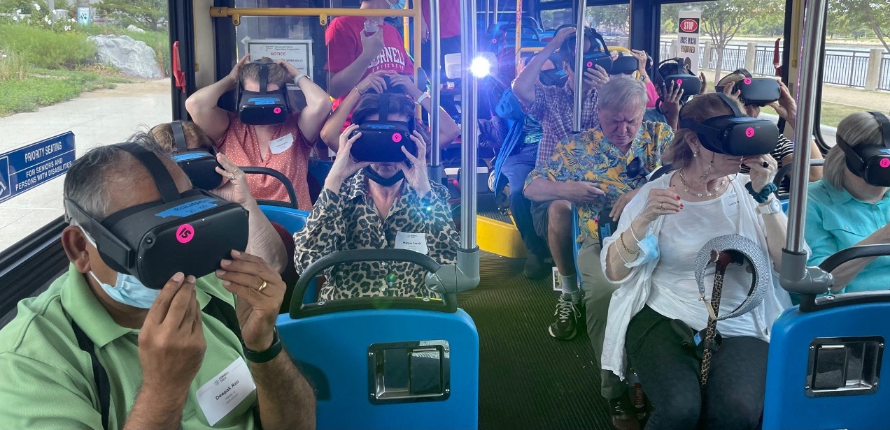
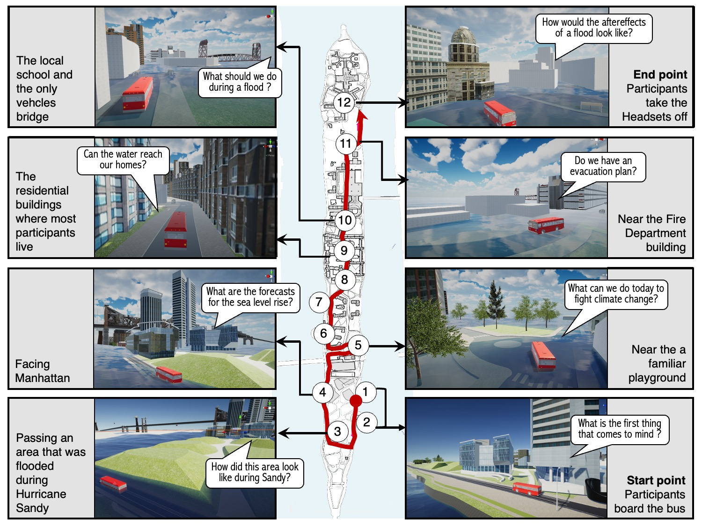
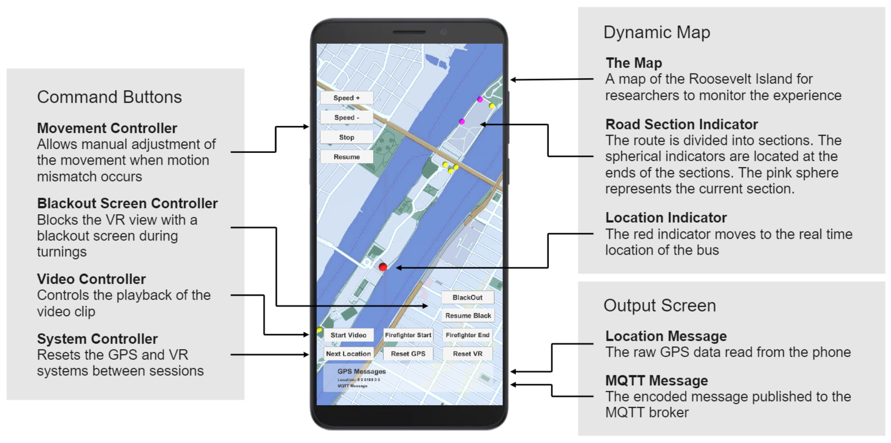
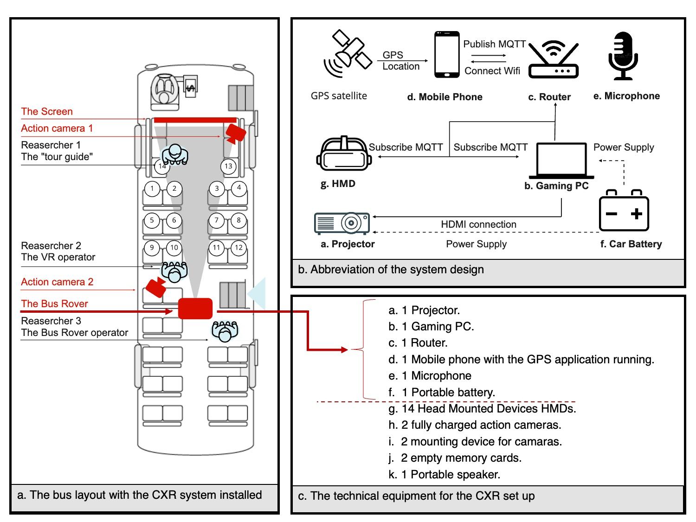
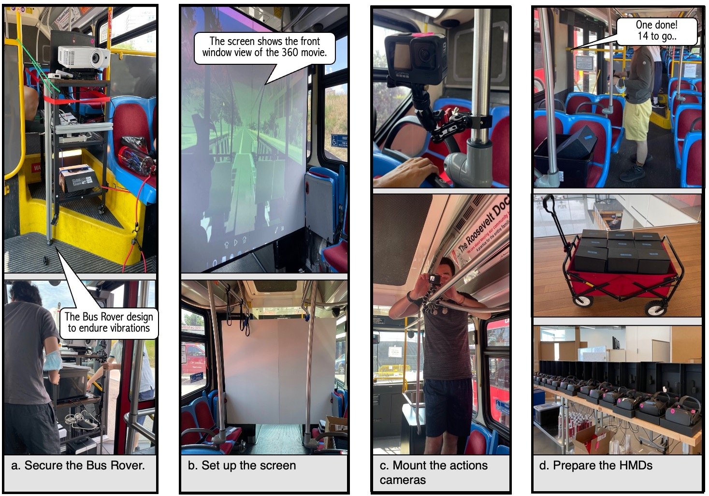

CXR: Communal eXtended Reality
For Immersive, Situated, On-Road Experiences
To engage communities in planning processes, we have developed a Communal eXtended-Reality (CXR) bus tour that depicts the possible impacts of climate change. This paper describes the geo-synchronized multi-user extended reality system we developed to provide a situated and shared experience to promote community engagement. We describe (a) our technical implementation of the CXR system, which geo-locates and orients the view each participant has of the virtual tour within the frame of the moving vehicle, (b) advances in the modeling of the digital twin environment of the tour critical to association with the real-life location, and (c) our fall-back system, which allows people who feel disoriented or motion-sick to continue along with the content of the tour. In addition to describing our system and protocol, we detail technical challenges we encountered and resolved in our preliminary deployment tests.
Video Synopsis
   